Blieve.ai: Bringing 11 AI Creative Tools Into One Simple App
Blieve.ai is a website where anyone can create with AI: turn a text description into an image, get a professional headshot from your photos, add effects, or turn a picture into a short video.
123RF had built these as 11 separate tools, each with its own look and its own way of working. Over four months I designed the one platform that brings them together, so people learn it once and move from tool to tool without starting over, from sign-up all the way to checkout.
My Role
Product Designer (UI/UX)
What I worked on
- The overall structure, and how people move from one tool to the next
- The screens for every AI tool
- Sign-up, login and onboarding
- Checkout and subscription plans
- Shared components so every tool looks and behaves the same
- Layouts that work on desktop, tablet and phone
Goals
I wanted someone who has never used an AI tool to feel at home within a few minutes.
So the platform had to be
- Easy to find your way around
- Quick to learn, even for non-technical people
- Consistent, so learning one tool teaches you the next
- Ready for new tools without a redesign
Adding AI was the easy part. Making it simple to use was the real job.
Background
123RF had built a lot of useful AI tools, but they were scattered.
Each tool was its own product with its own interface. If you generated an image and then wanted to turn it into a video, you had to jump somewhere else and learn a new layout. Blieve.ai was the chance to bring everything under one roof, so people could generate, edit, transform and keep their work without leaving.
The platform covers
- AI image generation
- AI effects
- AI headshots
- AI companion
- Image-to-video
- A library for everything you create
I designed it end to end: the structure, every tool screen, onboarding, login, checkout and the shared UI that ties it all together.
Problem
The tools were powerful, but using them felt like visiting five different apps.
In practice, people had to
- Switch between separate interfaces
- Relearn how things work in every tool
- Repeat steps they had already done somewhere else
- Dig through settings they didn't understand
For casual creators that was often enough to give up. They didn't come for the technology. They came to make something.
The problem wasn't missing features. It was the gaps between them.
Before vs After
Solution
I stopped treating each AI feature as its own product, and designed one workflow instead.

Every tool now follows the same path: generate, edit, enhance, transform and export. Once you've used one tool, you already know how the rest work.
To get there, I
- Gave every tool the same structure and controls
- Simplified the navigation into a few clear groups
- Added guided steps for first-time users
- Tucked advanced settings away until someone asks for them
- Built layouts with room for tools that don't exist yet
Powerful for people who want control, simple for everyone else.
Discovery
Before designing anything, I looked at how other AI creative tools organise their features.
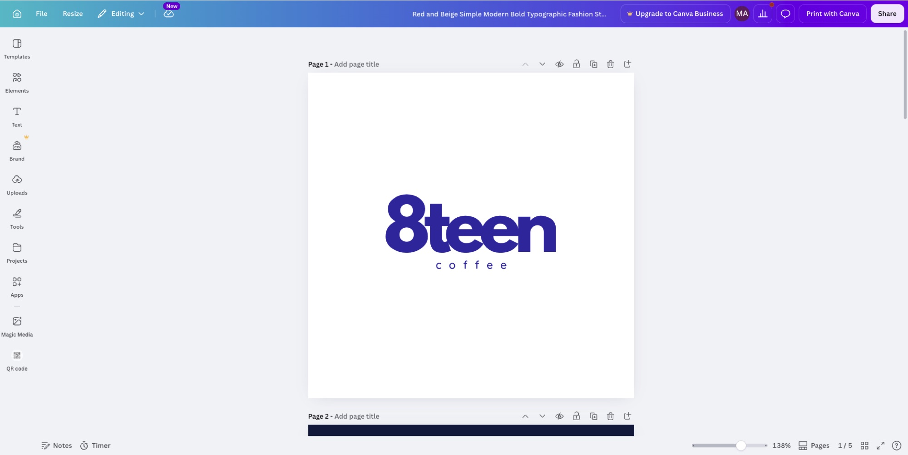
I paid attention to
- How navigation is structured
- How tools are grouped
- How people give instructions to the AI
- How a generation flows from start to finish
- How new users are welcomed in
What I kept seeing
- Most platforms pile on features but don't connect them
- Interfaces get overwhelming very quickly
- People care about the result, not the technology
- Jumping between tools breaks the creative flow
My biggest realisation was that people don't think in tools. Nobody wakes up wanting to "use the AI headshot tool". They think, "I need a good profile photo, fast."
So I switched from designing feature by feature to designing the workflow first.
Competitor Research
Midjourney
- High-quality AI image outputs
- Strong creative community ecosystem
- Simple prompting experience
- Workflow heavily depends on Discord
- Difficult for beginners to navigate
- Limited structured editing workflow
Canva AI
- Beginner-friendly interface
- Strong all-in-one creation ecosystem
- Familiar editing experience
- AI features feel separated from the main workflow
- Limited advanced AI customization
- Interface can become crowded with features
Runway
- Powerful AI video generation capabilities
- Professional creative workflow tools
- Strong timeline-based editing experience
- Complex interface for new users
- Steeper learning curve
- Navigation can feel overwhelming
Research
Next, I focused on what makes creating feel easy instead of intimidating.

What I learned
- Guided steps beat big dashboards full of options
- A clear hierarchy stops people from hesitating
- Familiar patterns build confidence
- Hiding advanced controls until they're needed keeps beginners calm
- Consistency between tools matters more than any single screen
The real opportunity was in the connections between tools, not in any one tool.
Challenges
The hardest part was keeping every tool consistent while still letting each one do its own thing.
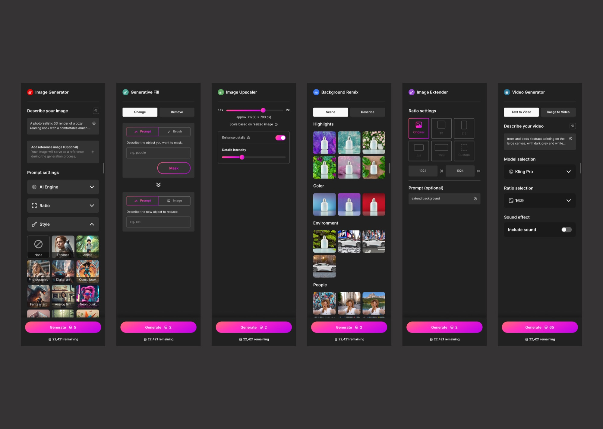
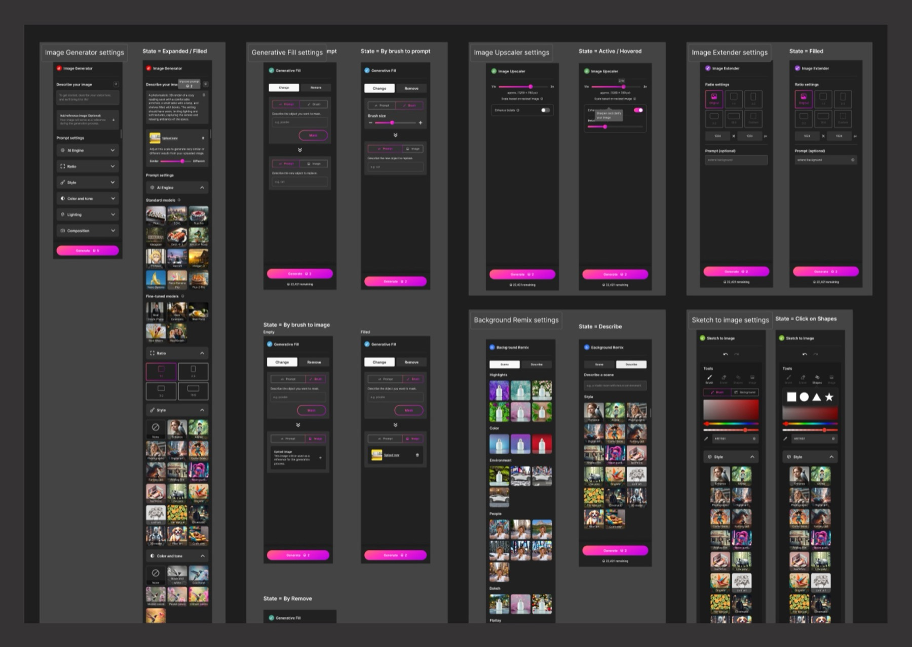
A headshot generator and an image-to-video tool need very different controls. Forcing them into the exact same screen would break one of them, but letting each go its own way would bring back the mess we started with. On top of that, new AI tools kept arriving while I was designing, so whatever I built had to stretch without getting cluttered.
My answer was to agree on what every tool shares, like the layout, navigation, buttons and how results appear, and to give each tool its own space only for the controls that make it unique.
Simple enough for beginners, flexible enough for every tool. That balance shaped the whole project.
Exploration
I explored several directions before settling on the structure.
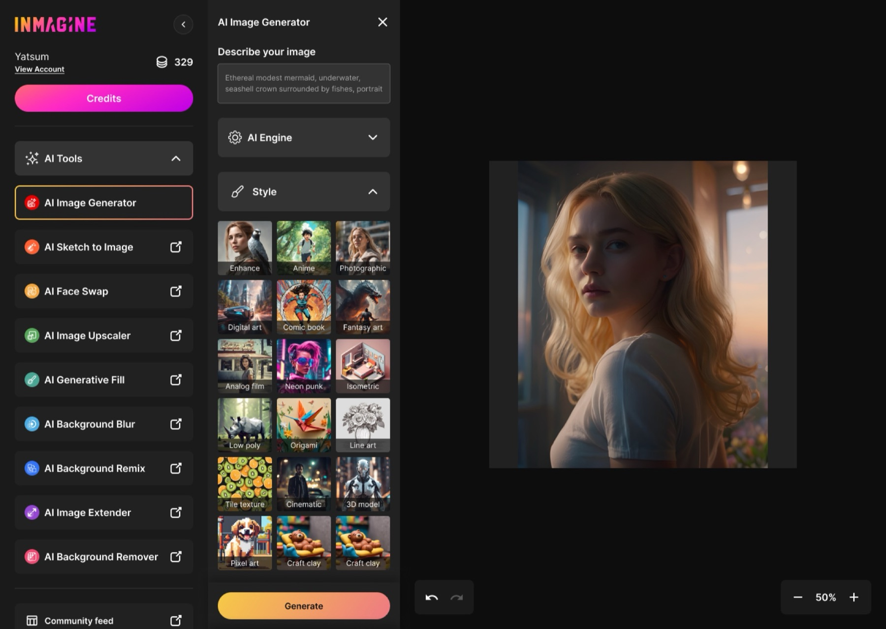
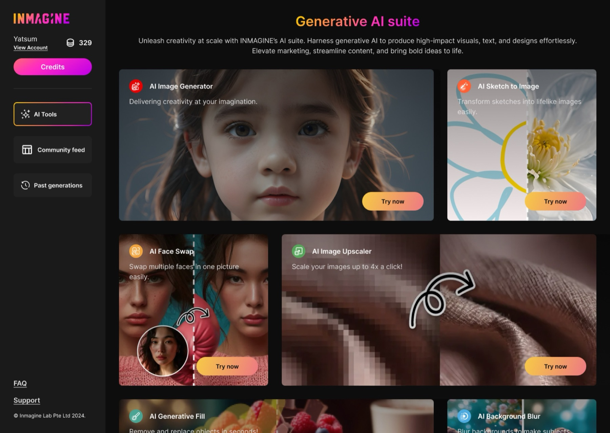
I judged every direction by one question: does this help someone make something faster?
Design System
With this many tools, the system mattered more than any single screen.
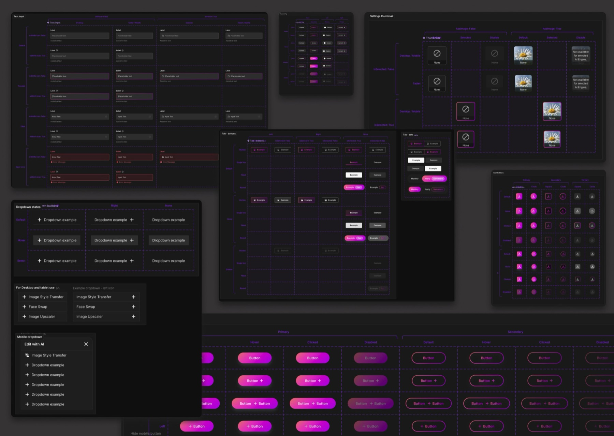
I set up
- One set of spacing and layout rules
- Reusable cards and pop-up windows
- Forms that behave the same everywhere
- A shared navigation
- Components that adapt to each tool's needs
Adding a new AI tool became a matter of reusing parts we already had.
Design
The final design is calm, consistent and ready to grow.
Key decisions
- The same layout across every AI tool
- One central place to start creating
- Simpler sign-up and login
- A shorter, clearer checkout
- A modular structure for future tools
- Advanced settings shown only when needed
Every screen is there to help people create, not to make them learn the interface.

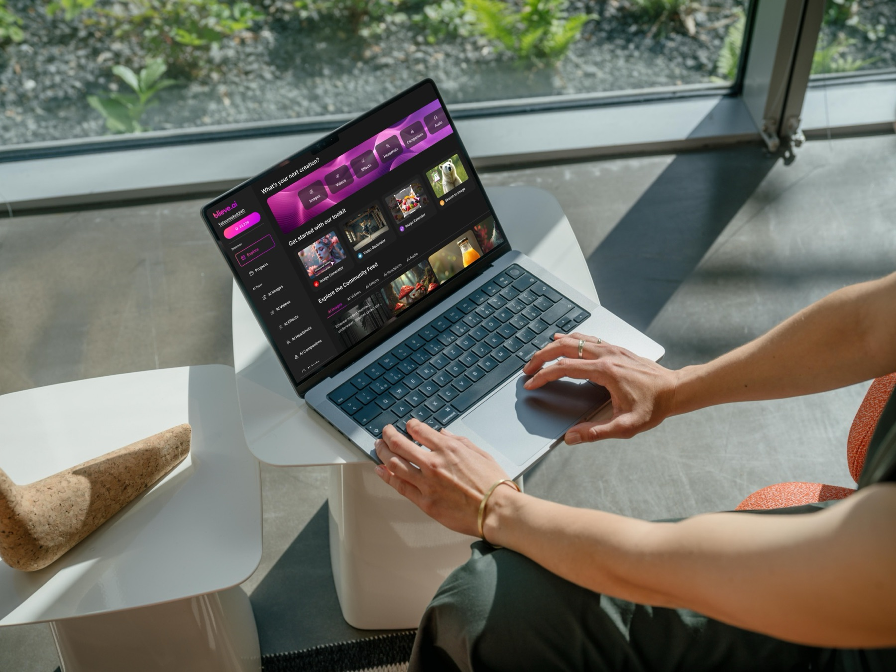
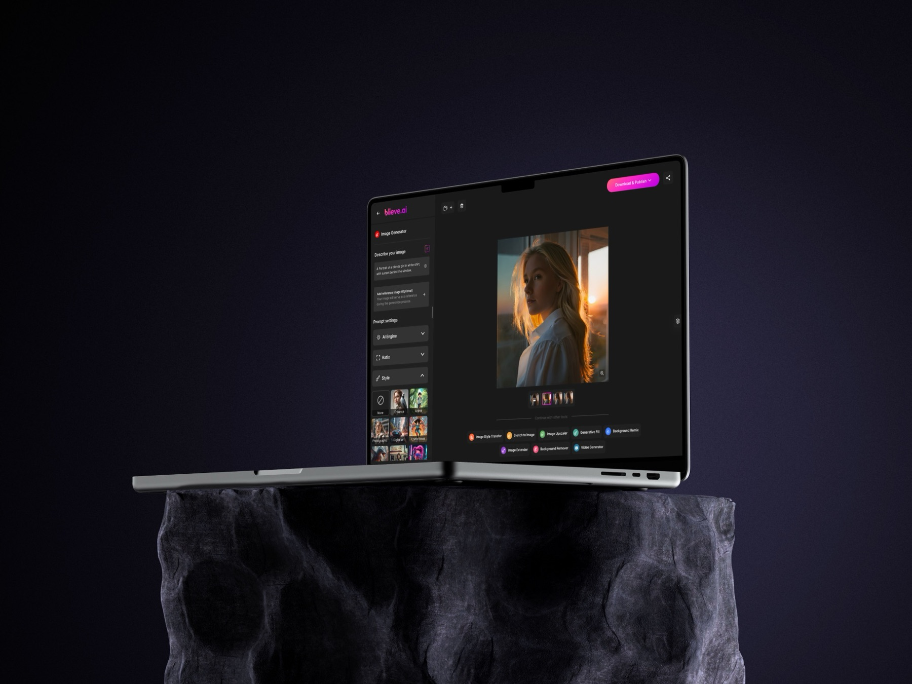
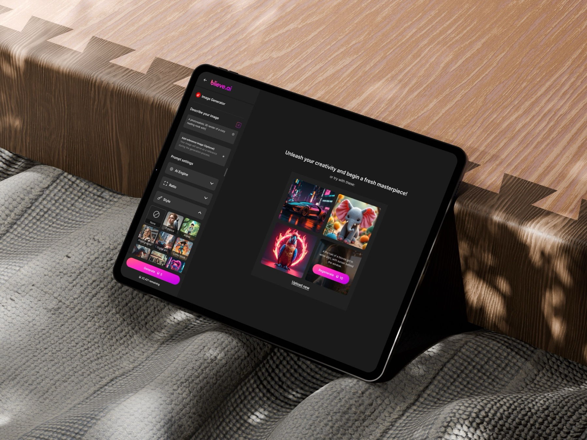
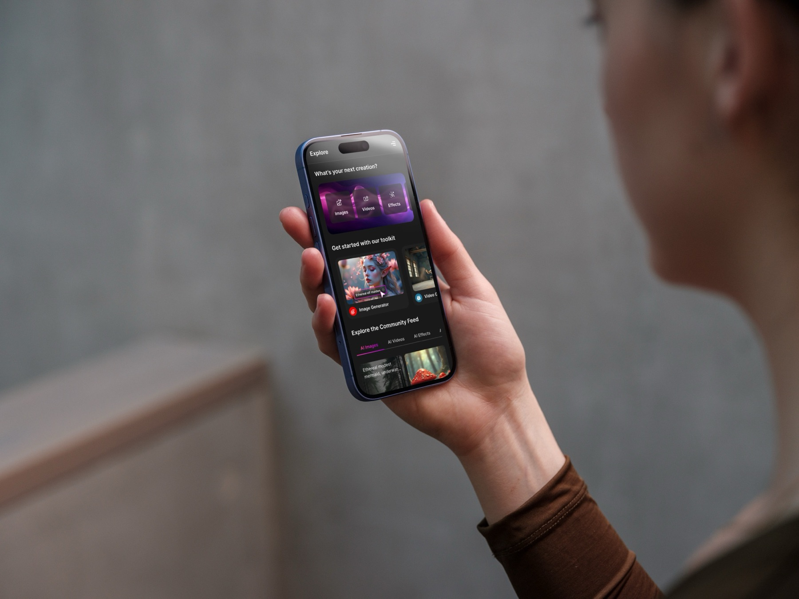
Outcome
Blieve.ai turned a set of separate tools into one connected platform.
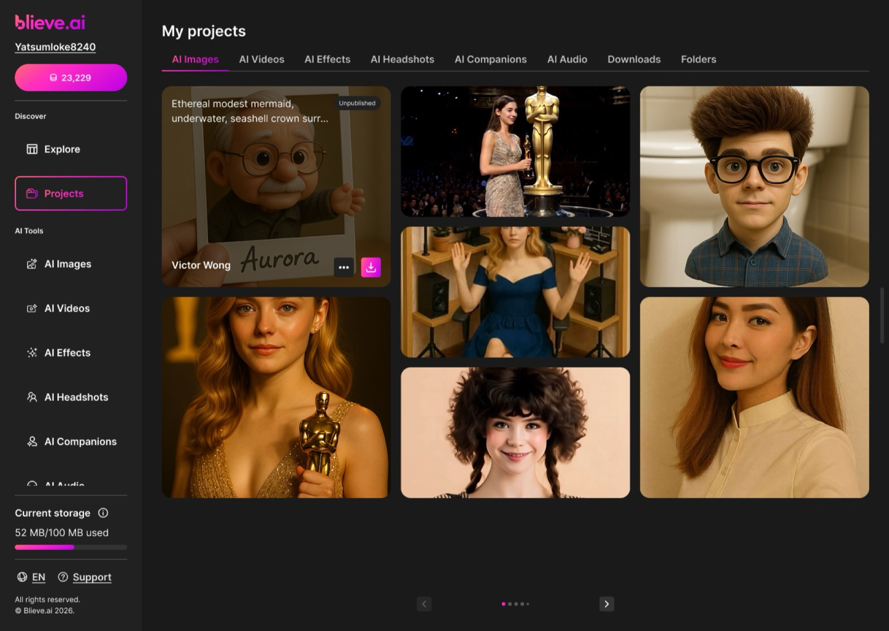
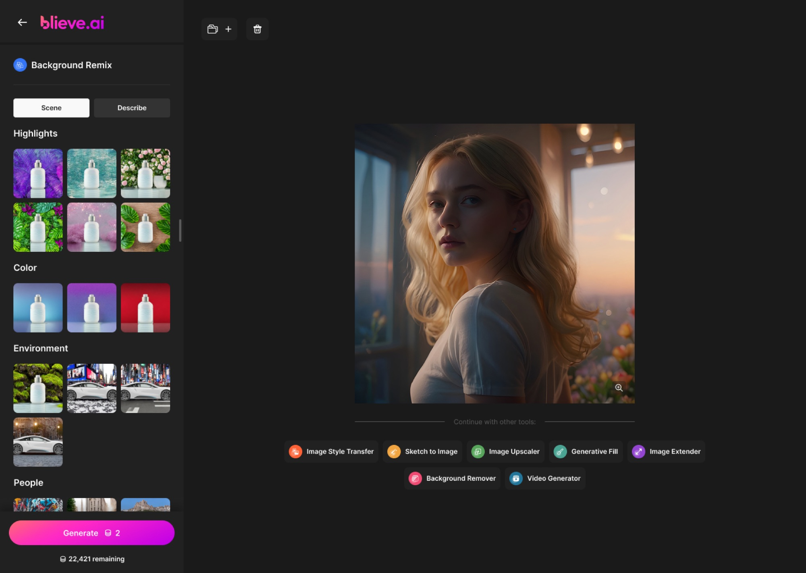
People can now go from an idea to a finished image or video without switching apps or relearning anything. Eleven AI tools from 123RF now live in one place and share one design language.
It also gave the team a design foundation that new AI features can plug straight into.
Key Takeaways
Blieve.ai taught me that good AI products aren't about having more features. They're about making the space between features feel effortless.
The biggest lesson was thinking in workflows. People don't care which tool they're in. They care about getting to the result quickly, so the moments between tools turned out to matter as much as the tools themselves.
It also showed me how much consistency matters in a product that changes fast. New AI capabilities kept arriving, and predictable patterns were what kept the experience from feeling overwhelming.
And it taught me to design for what's coming, not only for what's already there. The system had to welcome tools that hadn't been built yet, without losing its shape.
What I took away
- Thinking in workflows, not features
- Keeping a fast-moving product consistent
- Building systems that can grow
- Asking people to make fewer decisions
- Designing for beginners and power users at once